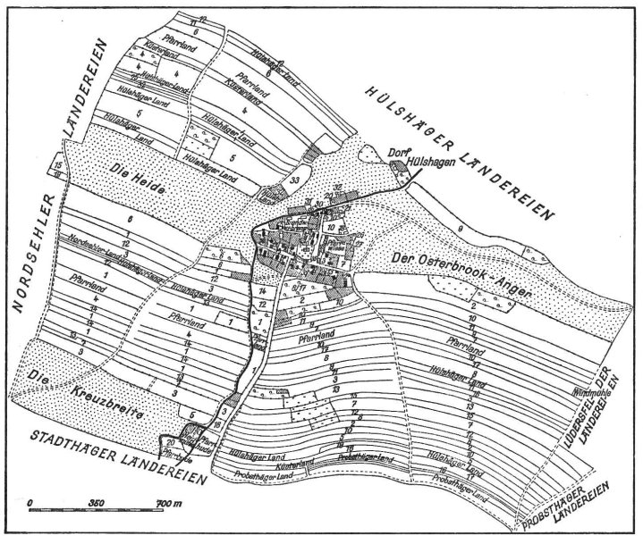
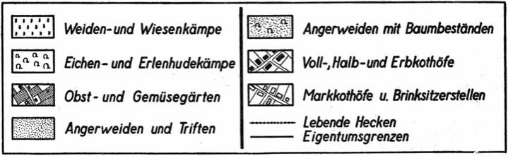
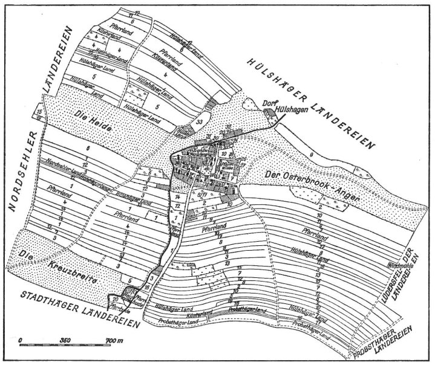

Gemarkungskarten der Hagenhufendörfer in Schaumburg-Lippe
Bild 10 (21 insgesamt) << zurück weiter >>
|  |
<< zurück zur Bildübersicht
Legende

|  |
Historische Arbeitsgemeinschaft für Schaumburg | Schlossplatz 2 | 31675 Bückeburg | Tel.: 05722 / 967730 | Fax: 05722 / 1289